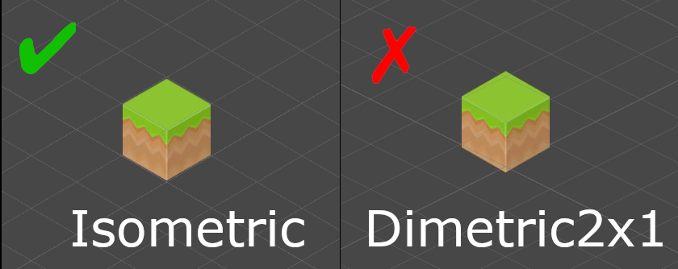

Getting Started¶
Welcome to this Getting Started guide. We will walk you through the basics on how to use this asset.
Task
Create an empty 2d project in Unity and import the Ultimate Isometric Toolkit from the asset store.
Adding a new Object¶
Task
Add a new sprite to your scene. Sprites can be found under Assets/UltimateIsometricToolkit/Art/.
Isometric Shader¶
All that is required to set up your sprites for this toolkit is to use a custom shader.
Task
On the SpriteRenderer component replace the Sprites-Default material with the IsometricInstancingMaterial that can be found under Assets/UltimateIsometricToolkit/Materials/ and confirm the Projection is set to Isometric in the material settings. The Enable GPU Instancing flag should be checked as well.
You may duplicate the material, create multiple different ones, etc. Just make sure that the IsometricInstancingUnlit shader is used to render your sprites.
Isometric Scene View¶
You will notice a slight rotation in the sprite. Go to Tools/UIT/Toggle SceneView or press Ctrl+G (Command on Mac) to switch to an isometric perspective in the SceneView. Press it again to return to the 3d perspective. Switching to the isometric perspective will automatically align the main camera and editor SceneView camera properly. An isometric perspective in the SceneView is indicated via the top right Scene Gizmo.
Info
Scene view rotations in isometric perspective are disabled, indicated by the lock in the top right corner
Projection¶
Although this asset is called the Ultimate Isometric Toolkit it allows to use other non-isometric projections. You can select the projection under Tools/UIT/Projection/. The correct projection depends solely on the sprites you use. This asset comes with a set of sprites in isometric perspective. You will know you chose the right projection, if the edges of your sprite align with the grid in the SceneView. This setting is important when using custom sprites.

You can now add new sprites to your scene and start with your level design.
Check out kenney's website for custom, public domain isometric sprites. Most of the sprites offered through his website use a dimetric projection.